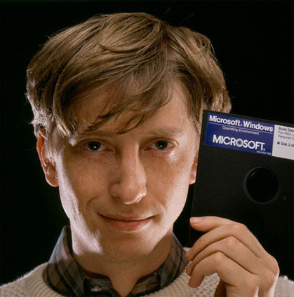

Биография
Дата создания: 09/10/2025
Гейтс родился 28 октября 1955 года в Сиэтле (штат Вашингтон), в семье корпоративного адвоката Уильяма Генри Гейтса II и члена совета директоров First Interstate Bank, Pacific Northwest Bell и национального совета USWest, United Way Мэри Максвелл Гейтс. Его прадедушка был мэром и сенатором, а дедушка — вице-президентом Национального банка. В семье у Билла прозвище Трей (слово «trey» обозначает тройку в карточных играх и в связано с «номерной» приставкой к имени). У Гейтса есть 2 сестры: старшая — Кристи и младшая — Либби. Гейтс учился в самой привилегированной школе Сиэтла «Лейксайд», где он смог развить свои навыки программирования на школьном мини-компьютере. В тринадцать лет Билл написал свою первую программу — игру «Крестики-нолики» на языке программирования Бейсик. В восьмом классе на занятиях по программированию, он познакомился с десятиклассником Полом Алленом. Со своими друзьями Гейтс тестировал компьютер PDP-10 корпорации Digital Equipment, принадлежащей Computer Center Corporation (ССС). Когда время, отведённое Биллу и его другу Полу для работы в ССС, истекло, они взломали программу. За взлом компьютеров четырём студентам школы — Рику Вэйленду, Кенту Эвансу, Полу Аллену и Биллу Гейтсу — запретили работать на компьютерах в течение всего лета. Инициатором наказания стала компания Computer Center Corporation, чей компьютер студенты взломали. По истечении наказания студенты предложили компании находить ошибки в их программном обеспечении за возможность работать на компьютерах компании. Компания согласилась, и Гейтс с товарищами изучали множество исходных кодов программного обеспечения, написанных на таких языках, как FORTRAN, LISP и в машинном коде. Данное сотрудничество продолжалось до 1970 года, пока компания не обанкротилась. В следующем году компания Information Sciences, Inc. наняла четырёх студентов (включая Билла и Пола), чтобы написать программу ведения платёжных ведомостей. Программа нужна была на языке Кобол, взамен ребята получали бесплатное рабочее время на PDP-10. Свою компанию они назвали Lakeside Programming Group, но завершить работу не смогли. В школе Гейтс не преуспевал в грамматике, обществоведении и других предметах, которые он считал тривиальными, но получал высшие отметки по математике. К концу начальной школы плохое поведение Гейтса стало волновать его родителей и учителей настолько, что он был направлен к психиатру.
Я помешался на компьютерах. Пропускал физкультуру. Сидел в компьютерном классе до ночи. Программировал по выходным. Каждую неделю мы проводили там по двадцать-тридцать часов. Был период, когда нам запретили работать, потому что мы с Полом Алленом украли пароли и взломали систему. Я остался без компьютера на целое лето. Тогда мне было пятнадцать-шестнадцать лет… — Малкольм Гладуэлл. Правило 10000 часов[8]
В 17 лет Гейтс, Пол Аллен и Пол Гилберт основали компанию Traf-O-Data. Название придумано Гейтсом от «jack-o’-lantern» — фонаря-тыквы. Цель компании была в создании счётчиков для считывания дорожного движения и составления отчётов для дорожных инженеров. Устройство Traf-O-Data продавалось 1972 по 1982 гг. На этом проекте Гейтс и Аллен заработали 20 тысяч долларов[9]. 25 декабря 1972 года (Рождество Христово) Бад Пемброк, тот что пригласил Билла и Пола работать на Information Service Inc., пригласил их работать в компанию TRW. Затевался большой программный проект для Бонневильского энергетического управления, где использовался PDP-10.